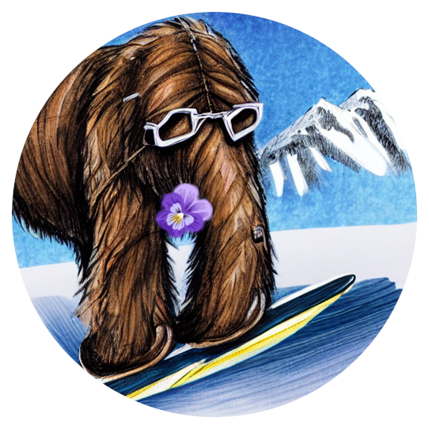

Welcome to Mammoth’s documentation!#
Mammoth - An Extendible (General) Continual Learning Framework for Pytorch#
Official repository of Class-Incremental Continual Learning into the eXtended DER-verse and Dark Experience for General Continual Learning: a Strong, Simple Baseline
Mammoth is a framework for continual learning research. It is designed to be modular, easy to extend, and - most importantly - easy to debug. Idelly, all the code necessary to run the experiments is included in the repository, without needing to check out other repositories or install additional packages.
With Mammoth, nothing is set in stone. You can easily add new models, datasets, training strategies, or functionalities.
NEW: Join our Discord Server for all your Mammoth-related questions → 


{kind=link}
{kind=link}
{kind=link}
{kind=link}
{kind=link}
Setup#
Use
./utils/main.pyto run experiments.Use argument
--load_best_argsto use the best hyperparameters from the paper.New models can be added to the
models/folder.New datasets can be added to the
datasets/folder.
Models#
Efficient Lifelong Learning with A-GEM: (A-GEM), and A-GEM with Reservoir buffer (A-GEM-R)
Bias Correction (BiC)
Continual Contrastive Interpolation Consistency (CCIC) - Requires
pip install korniaCODA-Prompt: COntinual Decomposed Attention-based Prompting for Rehearsal-Free Continual Learning (CODA-Prompt) - Requires
pip install timm==0.9.8Dark Experience Replay (DER)
Dark Experience Replay++ (DER++)
DualPrompt: Complementary Prompting for Rehearsal-free Continual Learning (DualPrompt) - Requires
pip install timm==0.9.8Experience Replay (ER)
online Elastic Weight Consolidation (oEWC)
Function Distance Regularization (FDR)
Greedy Sampler and Dumb Learner (GDumb)
Gradient Episodic Memory (GEM) - Unavailable on windows
Greedy gradient-based Sample Selection (GSS)
Hindsight Anchor Learning (HAL)
Incremental Classifier and Representation Learning (iCaRL)
Joint for General Continual` setting (JointGCL)
Learning to Prompt (L2P) - Requires
pip install timm==0.9.8LiDER (on DER++, iCaRL, GDumb, and ER-ACE)
Learning a Unified Classifier Incrementally via Rebalancing (LUCIR)
Learning without Forgetting (LwF)
Meta-Experience Replay (MER)
Progressive Neural Networks (PNN)
Regular Polytope Classifier (RPC)
Synaptic Intelligence (SI)
SLCA: Slow Learner with Classifier Alignment for Continual Learning on a Pre-trained Model (SLCA) - Requires
pip install timm==0.9.8Transfer without Forgetting (TwF)
eXtended-DER (X-DER)
Datasets#
NOTE: Datasets are automatically downloaded in the data/.
- This can be changed by changing the base_path function in utils/conf.py.
- The data/ folder is not tracked by git and is created automatically if missing.
Sequential MNIST (Class-Il / Task-IL)
Sequential CIFAR-10 (Class-Il / Task-IL)
Sequential Tiny ImageNet (Class-Il / Task-IL)
Sequential Tiny ImageNet resized 32x32 (Class-Il / Task-IL)
Sequential CIFAR-100 (Class-Il / Task-IL)
Sequential CIFAR-100 resized 224x224 (ViT version) (Class-Il / Task-IL)
Sequential CIFAR-100 resized 224x224 (ResNet50 version) (Class-Il / Task-IL)
Permuted MNIST (Domain-IL)
Rotated MNIST (Domain-IL)
MNIST-360 (General Continual Learning)
Sequential CUB-200 (Class-Il / Task-IL)
Sequential ImageNet-R (Class-Il / Task-IL)
Pretrained backbones#
Citing these works#
@article{boschini2022class,
title={Class-Incremental Continual Learning into the eXtended DER-verse},
author={Boschini, Matteo and Bonicelli, Lorenzo and Buzzega, Pietro and Porrello, Angelo and Calderara, Simone},
journal={IEEE Transactions on Pattern Analysis and Machine Intelligence},
year={2022},
publisher={IEEE}
}
@inproceedings{buzzega2020dark,
author = {Buzzega, Pietro and Boschini, Matteo and Porrello, Angelo and Abati, Davide and Calderara, Simone},
booktitle = {Advances in Neural Information Processing Systems},
editor = {H. Larochelle and M. Ranzato and R. Hadsell and M. F. Balcan and H. Lin},
pages = {15920--15930},
publisher = {Curran Associates, Inc.},
title = {Dark Experience for General Continual Learning: a Strong, Simple Baseline},
volume = {33},
year = {2020}
}
Awesome Papers using Mammoth#
Our Papers#
Dark Experience for General Continual Learning: a Strong, Simple Baseline (NeurIPS 2020)
Rethinking Experience Replay: a Bag of Tricks for Continual Learning (ICPR 2020) (code)
Class-Incremental Continual Learning into the eXtended DER-verse (TPAMI 2022)
Effects of Auxiliary Knowledge on Continual Learning (ICPR 2022)
Continual semi-supervised learning through contrastive interpolation consistency (PRL 2022) (code)
On the Effectiveness of Lipschitz-Driven Rehearsal in Continual Learning (NeurIPS 2022) (code)
Other Awesome CL works using Mammoth#
New Insights on Reducing Abrupt Representation Change in Online Continual Learning (ICLR2022) (code)
Learning fast, learning slow: A general continual learning method based on complementary learning system (ICLR2022) (code)
Self-supervised models are continual learners (CVPR2022) (code)
Representational continuity for unsupervised continual learning (ICLR2022) (code)
Continual Learning by Modeling Intra-Class Variation (TMLR 2023) (code)
Consistency is the key to further Mitigating Catastrophic Forgetting in Continual Learning (CoLLAs2022) (code)
Continual Normalization: Rethinking Batch Normalization for Online Continual Learning (ICLR2022) (code)
Learning from Students: Online Contrastive Distillation Network for General Continual Learning (IJCAI2022) (code)
Learning Fast, Learning Slow: A General Continual Learning Method based on Complementary Learning System (ICLR2022) (code)
Update Roadmap#
In the near future, we plan to incorporate the following improvements into this master repository:
ER+Tricks (Rethinking Experience Replay: a Bag of Tricks for Continual Learning)
Pull requests welcome! Get in touch
Contributing#
Please use autopep8 with parameters:
–aggressive
–max-line-length=200
–ignore=E402
Previous versions#
If you’re interested in a version of this repo that only includes the original code for Dark Experience for General Continual Learning: a Strong, Simple Baseline or Class-Incremental Continual Learning into the eXtended DER-verse, please use the following tags:
neurips2020 for DER (NeurIPS 2020).
tpami2023 for X-DER (TPAMI 2023).